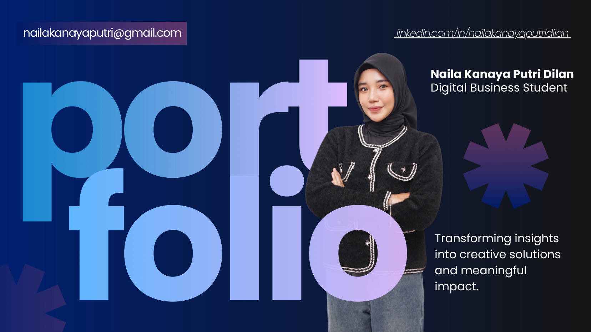
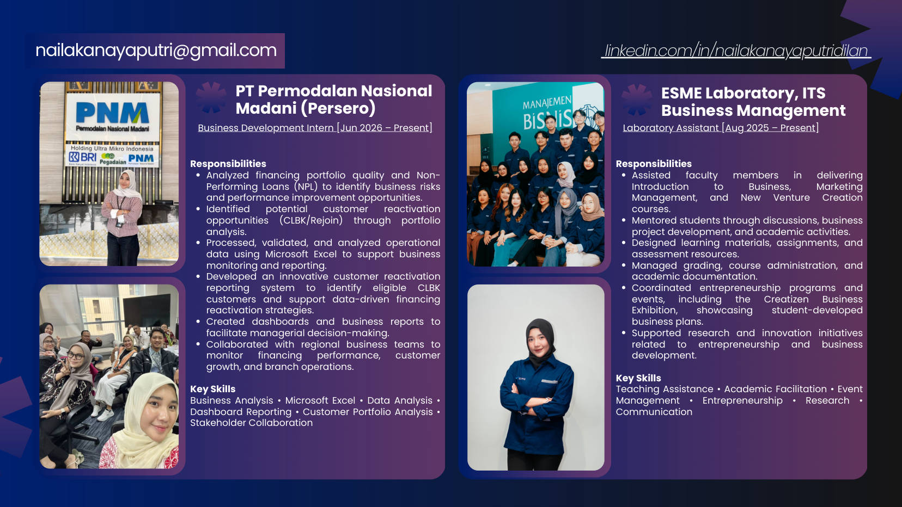
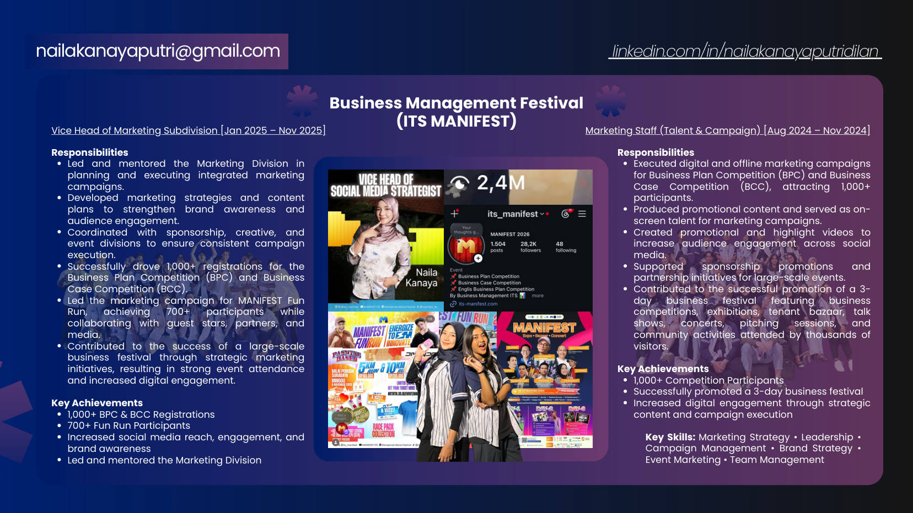
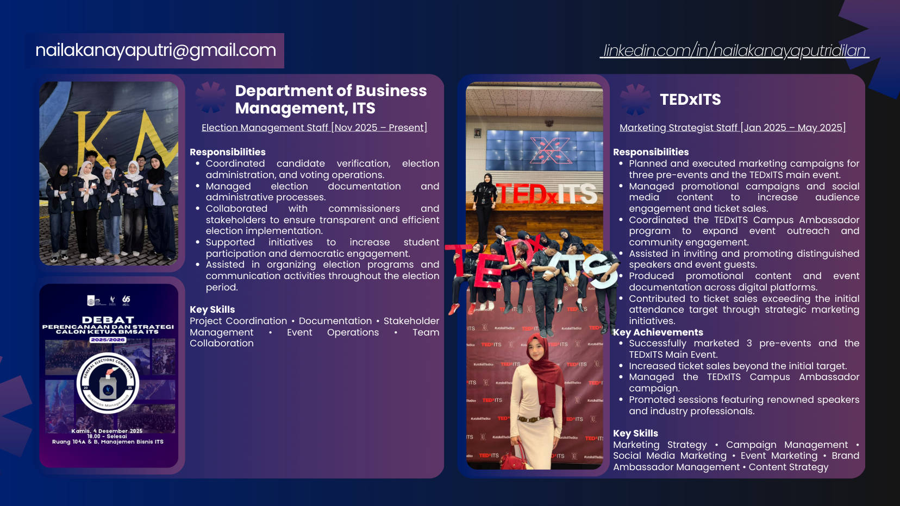
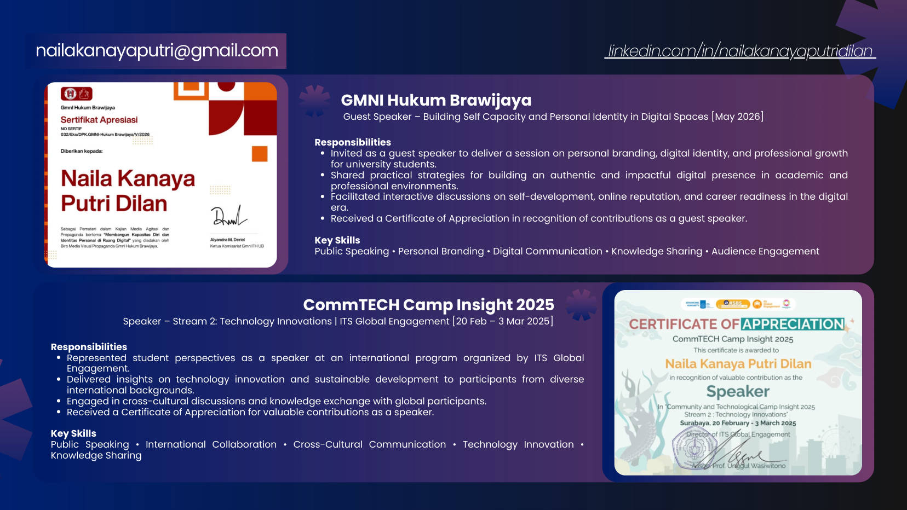
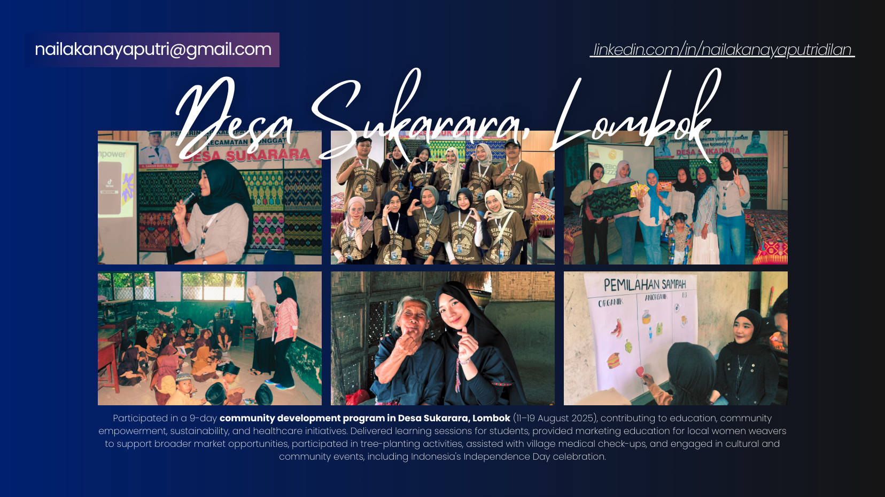
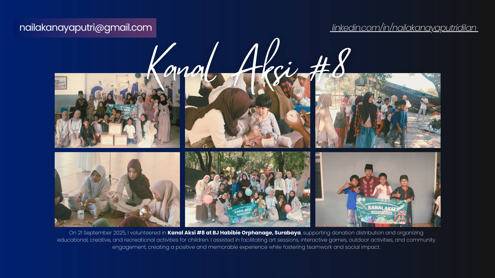
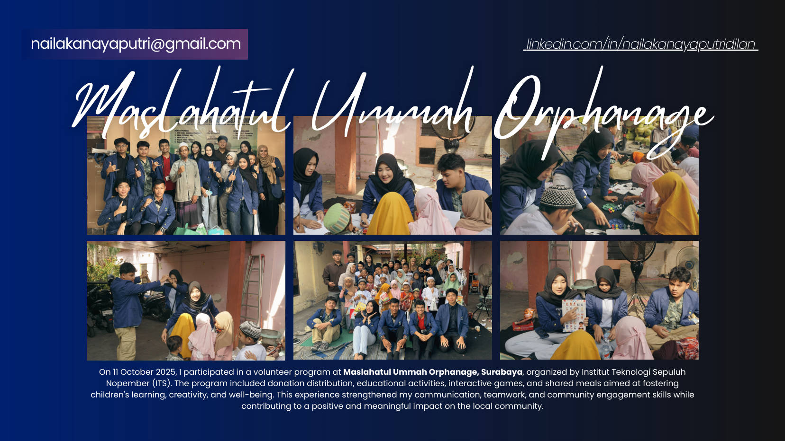

Discover
Started my journey as a Digital Business student at ITS and built a foundation in business, technology, and innovation.
DIGITAL BUSINESS · ITS
Hi, I’m Naila Kanaya Putri Dilan — a Digital Business student interested in business strategy, marketing, branding, and digital innovation.

01 / INTRODUCTION
I enjoy transforming ideas into impactful solutions by combining strategic thinking, creativity, and data-driven insights.
As an undergraduate at Institut Teknologi Sepuluh Nopember (ITS), I’ve grown through internships, academic projects, organizational experiences, and volunteering. These experiences have strengthened my collaboration, critical thinking, and problem-solving skills.
Say hello ↗B.Sc. Digital Business
Institut Teknologi Sepuluh Nopember (ITS)
2024 — Present
Surabaya, Indonesia
Indonesian · Native
English · Professional working proficiency
02 / MY JOURNEY
Each step has helped me turn curiosity into practical experience.
Started my journey as a Digital Business student at ITS and built a foundation in business, technology, and innovation.
Collaborated with diverse teams through campus organizations and contributed to student initiatives.
Developed marketing, branding, and business strategies through creative projects and organizational roles.
Strengthened leadership, communication, and problem-solving through marketing leadership, speaking, and project management.
Applied my knowledge in a professional environment as a Business Development Intern at PNM.
03 / EXPERIENCE
A selection of professional, academic, and organizational experiences.

BUSINESS DEVELOPMENTBusiness Development Intern
Analyze financing portfolio quality and NPL, identify customer reactivation opportunities (CLBK/Rejoin), and build data-driven reporting to support business decisions.
Business Management Laboratory Assistant
Support business and marketing courses, mentor students on projects, prepare learning materials, and coordinate entrepreneurship programs and events.

MARKETING LEADERSHIPVice Head of Marketing Subdivision
Led integrated marketing campaigns, coordinated with cross-functional teams, and helped drive 1,000+ competition registrations and 700+ Fun Run participants.

EVENT MARKETINGMarketing Strategist Staff
Planned campaigns for three pre-events and the main event, managed social content and campus ambassador outreach, and supported ticket sales beyond the initial target.
Marketing Staff · Talent & Campaign
Produced promotional and highlight videos, supported sponsorship campaigns, and helped promote a three-day business festival attended by thousands of visitors.
Election Management Staff
Coordinate candidate verification, election administration, documentation, and stakeholder communication to support transparent student elections.
04 / SPEAKING & KNOWLEDGE SHARING

Guest Speaker — Personal Branding
Delivered a session on personal branding, digital identity, and professional growth for university students.
Speaker · Stream 2: Technology Innovations
Represented student perspectives and shared insights on technology innovation and sustainable development with international participants.
05 / VOLUNTEER
Community experiences that shaped my perspective on service, empathy, and collaboration.

Joined a nine-day community development program supporting education, women weavers’ marketing knowledge, sustainability, and community healthcare initiatives.

Supported donation distribution and organized educational, creative, and recreational activities for children at BJ Habibie Orphanage.

Contributed to donation distribution, educational activities, interactive games, and community engagement for children.
06 / CERTIFICATION
Professional certification covering innovation, leadership, and business strategy.
07 / WHAT MAKES ME DIFFERENT
I prefer leading by taking initiative, collaborating, and delivering measurable results.
I’m always exploring new opportunities, technologies, and perspectives.
I believe meaningful change starts with small actions and thoughtful decisions.
“My goal is to build a successful career while creating meaningful impact through innovation, leadership, and continuous growth.”
08 / LET’S CONNECT
I’m always happy to connect about business, marketing, collaboration, and new opportunities.